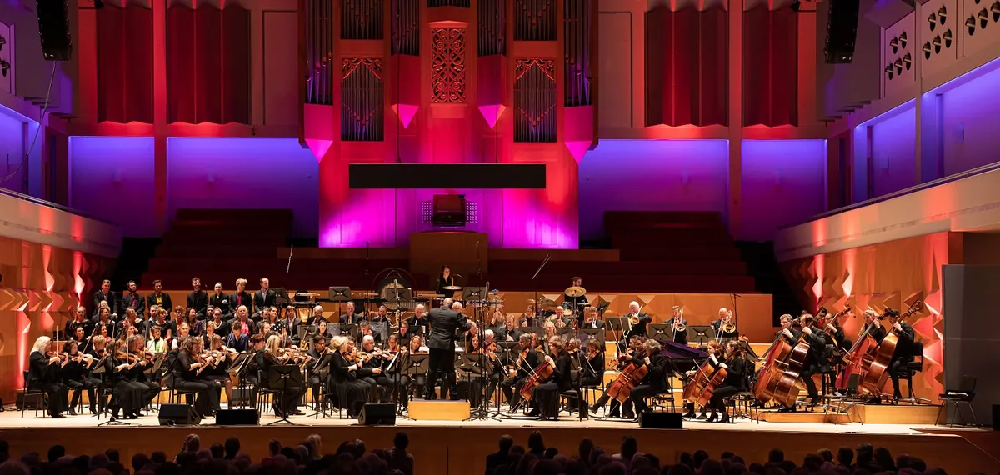

Bedrijvengids
Theaters en poppodia in Nijmegen
Een concert in een zaal waar al decennia bands spelen, cabaret in de schouwburg of een voorstelling in een klein theater: Nijmegen heeft een rijk cultureel leven, met podia voor elk publiek.
Op deze pagina vind je alle 34 podia in Nijmegen, met openingstijden, een eigen pagina en een kaart. Filter hieronder op wat jij belangrijk vindt, zoals concerten, comedy of jeugdvoorstellingen.
Uitgelicht
 UitgelichtDe BrauerijMehrer Straße 1, 47559 Kranenburgparticulierenzakelijke klantenBekijk aanbod
UitgelichtDe BrauerijMehrer Straße 1, 47559 Kranenburgparticulierenzakelijke klantenBekijk aanbod

UitgelichtPhion - Orkest van Gelderland & OverijsselJansbuitensingel 5, 6811 AA ArnhemconcertenBekijk aanbod Nog 1 plek vrijZet jouw podium hier bovenaan, boven 34 andere podia. Met foto's, je actie, een eigen knop en je banner bij onze blogs over theater en muziek.Het eerste jaar € 99Waar zoek je naar?
Alle podia in Nijmegen
Op de kaart
Heb je een podium in Nijmegen?
Elk podium staat gratis in onze gids. Wil je opvallen tussen 34 podia? Kies dan voor Uitgelicht of Partner.
| Gratis | Uitgelicht € 149 per jaar, eerste jaar € 99 | Partner € 449 per jaar | |
|---|---|---|---|
| Eigen pagina met adres, kaart en openingstijden | ✓ | ✓ | ✓ |
| Tekst door onze redactie | kort | uitgebreid | uitgebreid |
| Foto's op je eigen pagina | 1 | tot 10 | tot 10 |
| Bovenaan deze pagina, met foto en label Uitgelicht | – | ✓ | ✓ |
| Actie en eigen knop (tickets, agenda, route) | – | ✓ | ✓ |
| Uitgelicht onder onze blogs over theater en muziek | – | ✓ | ✓ |
| Banner in de partnerbalk | – | bij blogs over theater en muziek | op de hele site |
| Artikel over je bedrijf en een plek in de nieuwsbrief | – | – | ✓ |
| Overzicht van weergaven en kliks | jaarlijks | jaarlijks | elk kwartaal |
Kies Uitgelicht Alle mogelijkheden · Staat je podium er al? Klik op je pagina op Dit is mijn bedrijf.
Lees ook
Veelgestelde vragen
Waar zie je concerten in Nijmegen?
Filter op concerten voor de poppodia en concertzalen.
Zijn er voorstellingen voor kinderen?
Ja, filter op jeugdvoorstellingen.
Gegevens: onze eigen gids, aangevuld met © OpenStreetMap-bijdragers en Overture Maps.